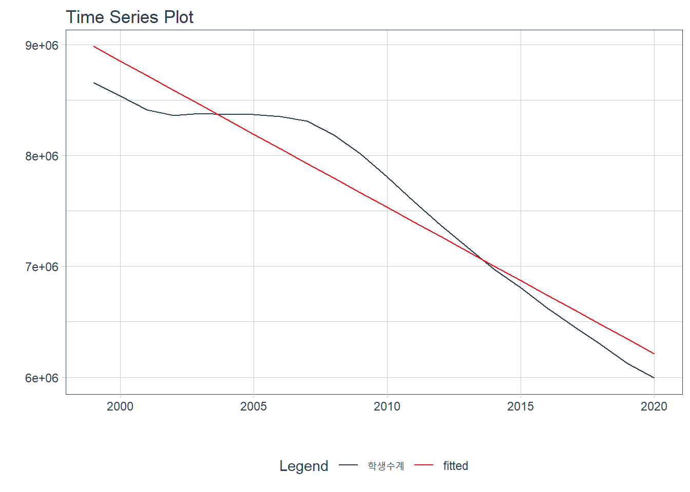

6.5 Regression 모델
회귀 모델은 선형 회귀(Linear Regression), 비선형 회귀,(Non-linear Regression) 로지스틱 회귀(Logistic Regression) 등의 방법이 있다. 회귀 모델은 종속변수와 독립변수와의 관계를 가장 잘 나타내는 회귀방정식을 도출하여 미래 데이터에 대한 예측치를 생성하는 방법으로 아직도 머신러닝 알고리즘 중에 가장 많이 사용되는 알고리즘 중에 하나이다.5
시계열 데이터의 회귀 모델은 두가지로 구분할 수 있다. 첫번째는 두 가지 이상의 시계열 데이터(Multivariate) 간의 상관 관계를 회귀 모델로 추상화하는 것과 한가지 시계열 데이터(Univariate)의 시간에 따른 회귀모델이다. 사실 첫번째 모델의 경우는 일반적 회귀모델과 큰 차이는 없지만 사용하는 함수는 시계열 패키지에서 따로 제공된다. 두번째 모델의 경우는 시계열 데이터의 특성인 추세(trend)와 계절성(season), 반복성(cycle)을 회귀에 반영한다는 점에서 일반적 회귀와는 차이가 있다.
시계열 선형 회귀 모델은 데이터간의 관계를 가장 잘 나타내는 직선(Linear)을 산출하여 미래 데이터를 예측하는 방법이다. 선형 회귀 모델은 선형 방정식으로 표현되는데 직선의 기울기(Slope)와 Y 축 절편(Intercept)의 계수(Coefficient)가 산출된다. 시계열 데이터의 선형 회귀를 위해서 forecast 패키지의 tslm()함수, timetk 패키지의 plot_time_series_regression() 함수(stats::lm() 함수를 사용하여 선형회귀 결과를 plotting하는 함수) 등을 사용할 수 있다.
6.5.1 forecast::tslm()
forecast 패키지에서 제공하는 tslm() 함수는 시계열 선형회귀 모델을 위한 함수이다. tslm() 함수는 lm() 함수의 래퍼 함수(Wrapper)로 사용법은 비슷하다. 시간축이 독립변수에 포함되지 않은 두개 혹은 두개 이상의 시계열 객체에 대한 선형회귀는 lm() 함수의 결과와 같다. 즉 시계열 데이터이지만 독립변수 시간이 포함되지 않는다면 시계열 데이터로써의 특성이 적용되지 않은 양 데이터간의 특성정보만으로 선형회귀 방정식이 얻어진다. 예를 들자면 앞선 학생수 예제에서 유치원 학생수와 초등학교 학생수간의 선형 회귀분석을 실시하거나 하는 경우이다.
반면 시간을 독립변수로 하여 선형회귀 모형을 적용하기 위해서는 ‘trend,’ ‘season’ 키워드를 함수식의 ~ 오른쪽의 독립변수에 기재하여 시간에 대한 선형회귀 방정식을 얻을 수 있다. ‘trend’는 시계열적인 추세를 반영하여 선형회귀 모델을 만들고 ’season’은 시계열의 계절성을 반영하여 회귀모델을 만들게 되는데 두가지를 모두 고려할 때는’+’ 기호로 연결하여 사용한다. 이 과정에서 추가적인 독립변수를 추가할 수도 있는데 독립변수를 추가할 때도 ‘+’ 기호를 사용하여 회귀모델을 만들 수 있다.
앞선 모델들과 달리 앞으로 설명할 모델들은 모델 자체에서 미래 예측치를 생성하지 않는다. 따라서 모델에 따른 미래 예측치를 산출하기 위해서는 forecast 패키지에서 제공하는 forecast()를 사용해야하고 이 결과값으로 plot을 생성해야 한다.
# 전체 학생수 예측 모델을 추세를 반영하여 생성
student.ts.lm <- tslm(students.ts[,2] ~ trend, data = students.ts)
summary(student.ts.lm)
Call:
tslm(formula = students.ts[, 2] ~ trend, data = students.ts)
Residuals:
Min 1Q Median 3Q Max
-327962 -206697 -48003 183951 390933
Coefficients:
Estimate Std. Error t value Pr(>|t|)
(Intercept) 9118484 107928 84.49 < 2e-16 ***
trend -132164 8218 -16.08 6.61e-13 ***
---
Signif. codes: 0 '***' 0.001 '**' 0.01 '*' 0.05 '.' 0.1 ' ' 1
Residual standard error: 244500 on 20 degrees of freedom
Multiple R-squared: 0.9282, Adjusted R-squared: 0.9246
F-statistic: 258.7 on 1 and 20 DF, p-value: 6.608e-13# 전체 학생수 예측 모델을 forecast()를 사용해 예측치를 산출하고 autoplot()으로 plot 생성
student.ts.lm %>% forecast() %>% autoplot() + labs(x = '학생수')아래의 모델은 초등학교 학생수 예측모델을 만드는데 트랜드와 유치원 학생수를 독립변수로 하는 모델을 만드는 예이다.
# 초등학생 학생수의 예측모델을 생성하는데 유치원 학생수와 트랜드를 사용하는 선형 모델을 생성
student.ts.lm <- tslm(students.ts[,4] ~ students.ts[,3] + trend, data = students.ts)
# forecast()로 생성된 모델에 대한 미래 예측 데이터를 만들고 autoplot()으로 plot 생성
student.ts.lm %>% forecast(h = 22) %>% autoplot(main = '유치원 학생수와 추세를 활용한 초등학생수 예측 모델', xlab = '연도', ylab = '학생수')위의 예제에서 사용한 데이터는 연도별 학생수의 합계이다. 이 데이터와 같은 연도별 데이터는 계절성이 존재하지 않기 때문에 season 키워드를 사용하면 아래와 같이 에러를 낸다.
student.ts.lm <- tslm(students.ts[,2] ~ trend + season, data = students.ts)Error in tslm(students.ts[, 2] ~ trend + season, data = students.ts): Non-seasonal data cannot be modelled using a seasonal factor전체 취업자수와 교육서비스업 취업자수에 대한 선형회귀분석 모델과 plot은 다음과 같다.
# 전체 취업자수를 추세(trend)만으로 선형 회귀분석
employee.total.ts.lm <- tslm(employees.ts[,2] ~ trend, data = employees.ts)
# y절편이 25430, 기울기가 20.39인 선형 회귀모델 생성
summary(employee.total.ts.lm)
Call:
tslm(formula = employees.ts[, 2] ~ trend, data = employees.ts)
Residuals:
Min 1Q Median 3Q Max
-1256.4 -264.1 119.9 350.6 525.7
Coefficients:
Estimate Std. Error t value Pr(>|t|)
(Intercept) 25430.605 85.545 297.28 <2e-16 ***
trend 20.394 1.531 13.32 <2e-16 ***
---
Signif. codes: 0 '***' 0.001 '**' 0.01 '*' 0.05 '.' 0.1 ' ' 1
Residual standard error: 415.8 on 94 degrees of freedom
Multiple R-squared: 0.6536, Adjusted R-squared: 0.6499
F-statistic: 177.3 on 1 and 94 DF, p-value: < 2.2e-16# 전체 취업자수에 대한 선형회귀 모델의 예측치에 대한 plot 생성
employee.total.ts.lm %>% forecast() %>% autoplot()아래의 예는 시계열 선형 회귀 모델에 추세와 계절성까지 반영한 모델을 사용한 경우이다. 계절성을 포함시키기 위해서는 tslm()의 ~의 오른쪽 수식에 season 키워드를 넣어줌으로써 계절성을 반영한 시계열 모델을 생성할 수 있다. 계절성 선형 모델을 summary()를 통해 상세 정보를 보면 앞서 봤던 추세만으로 생성한 모델과는 조금 다른 점이 있다. season2부터 season12까지의 변수가 추가되는데 이를 더미변수(dummy variable)이라고 한다. 2월부터 12월까지에 각각 대응되는 변수인데 이 변수는 1과 0의 값만 가질수 있다. 예를 들어 2월의 데이터를 예측하기 위해서는 season2의 값만 1이고 나머지 season3부터 season12까지는 0으로 설정된다. 따라서 2월의 회귀계수만이 영향을 미치게 되므로 계수값은 많이 나오지만 각각의 예측치를 만들때에는 season2부터 season12중에 하나의 계수값만 더해지게 된다.
# 전체 취업자수를 추세(trend)와 계절성(season)으로 선형 회귀분석
employee.total.ts.lm <- tslm(employees.ts[,2] ~ trend + season, data = employees.ts)
summary(employee.total.ts.lm)
Call:
tslm(formula = employees.ts[, 2] ~ trend + season, data = employees.ts)
Residuals:
Min 1Q Median 3Q Max
-675.70 -42.60 76.66 147.08 312.95
Coefficients:
Estimate Std. Error t value Pr(>|t|)
(Intercept) 24850.616 96.043 258.744 < 2e-16 ***
trend 19.457 0.919 21.171 < 2e-16 ***
season2 1.168 123.798 0.009 0.99249
season3 318.462 123.808 2.572 0.01189 *
season4 629.005 123.825 5.080 2.29e-06 ***
season5 869.174 123.849 7.018 5.63e-10 ***
season6 919.342 123.880 7.421 9.13e-11 ***
season7 935.260 123.918 7.547 5.14e-11 ***
season8 803.429 123.962 6.481 6.13e-09 ***
season9 854.597 124.013 6.891 9.94e-10 ***
season10 890.516 124.071 7.177 2.75e-10 ***
season11 898.809 124.135 7.241 2.07e-10 ***
season12 385.477 124.207 3.104 0.00261 **
---
Signif. codes: 0 '***' 0.001 '**' 0.01 '*' 0.05 '.' 0.1 ' ' 1
Residual standard error: 247.6 on 83 degrees of freedom
Multiple R-squared: 0.8915, Adjusted R-squared: 0.8759
F-statistic: 56.86 on 12 and 83 DF, p-value: < 2.2e-16employee.total.ts.lm %>% forecast() %>% autoplot()

선형 회귀분석을 시행할 때 주의해야 할 점은 회귀모델이 적용 결과의 잔차가 백색 잡음이어야 한다는 점이다. 잔차의 자가회귀성이 존재하는 경우는 시계열적 특성을 여전히 지니고 있기 때문에 이를 제거할 필요가 있다. 다만 이 예측은 ‘잘못된’ 것은 아니나 예측구간이 커지기 때문에 비효율적 예측 모델이 된다.6 또한 예측에 적용해야할 시계열적 특성이 남아있다는 것을 잔차에서 확인할 수 있다.
아래의 예에서 보면 전체 학생수를 추세에 의해 선형 회귀분석을 시행한 경우 잔차는 자기 상관성을 지니고 있음을 볼 수 있다. 이는 forecast 패키지의 checkresiduals() 함수를 사용하여 확인하는데 plot만 봐도 백색잡음이 아님을 확인할 수 있지만 백색잡음 테스트인 Breusch-Godfrey 테스트 결과(checkresiduals() 함수는 회귀모델에 대해서는 Breusch-Godfrey 테스트를, 나머지는 Ljung-Box 테스트를 시행한다.)의 p-value가 0.05보다 작기 때문에 자기상관성이 존재하여 백색잡음으로 볼 수 없다.
checkresiduals(tslm(students.ts[,2] ~ trend, data = students.ts))
Breusch-Godfrey test for serial correlation of order up to 5
data: Residuals from Linear regression model
LM test = 19.584, df = 5, p-value = 0.0014966.5.2 timetk::plot_time_series_regression
timetk 패키지는 시계열 데이터를 핸들링하고 plotting 하는 데 주로 활용하는 패키지이다. 그래서 모델링을 위한 함수를 바로 제공하지는 않고 plotting 함수에서 회귀 모델을 호출하여 회귀 결과를 plotting 하는 함수를 제공한다. plot_time_series_regression() 함수에서 사용하는 선형회귀 함수에서도 trend, season 을 적용할 수 없다. 다만 ts 객체가 아닌 data.frame 객체를 사용할 수있다는 장점이 있다.
library(timetk)
library(lubridate)
plot_time_series_regression(.data = students,
.date_var = 연도,
.formula = 학생수계 ~ 연도,
.interactive = FALSE,
.show_summary = TRUE)
Call:
stats::lm(formula = .formula, data = .data)
Residuals:
Min 1Q Median 3Q Max
-328001 -206778 -47994 183960 390806
Coefficients:
Estimate Std. Error t value Pr(>|t|)
(Intercept) 12819016.6 328759.6 38.99 < 2e-16 ***
연도 -361.8 22.5 -16.08 6.61e-13 ***
---
Signif. codes: 0 '***' 0.001 '**' 0.01 '*' 0.05 '.' 0.1 ' ' 1
Residual standard error: 244500 on 20 degrees of freedom
Multiple R-squared: 0.9282, Adjusted R-squared: 0.9246
F-statistic: 258.7 on 1 and 20 DF, p-value: 6.612e-13
# 계절성 반영을 위해
employees$date <- as.yearmon(employees$time, "%Y. %m")
# plot_time_series_regression에 trend만 반영시
plot_time_series_regression(.data = employees,
.date_var = time,
.formula = total ~ as.numeric(yearmonth(date)),
.interactive = FALSE) # plot_time_series_regression에 trend, season(월)까지 반영시
plot_time_series_regression(.data = employees,
.date_var = time,
.formula = total ~ year(date) +
month(date, label = TRUE),
.interactive = FALSE) 
이기준 외, 인구지형변화에 따른 머신러닝 기반 고등교육 계열별 수요예측 모형 개발(2020), 한국교육개발원↩︎
결과 설명
Residuals : 모델을 적용한 잔차의 최소(Min), 25%(1Q), 중간(Median), 75%(3Q), 최대(Max)값을 산출
Coefficients : y 절편(intercept)은 9,118,484이고 p value가 0.05보다 작으니 통계적으로 유의미하고, 선형 회귀 기울기(trend)는 -132164로 1년이 지날 수록 13만명정도가 계속 감소한다는 의미로 p value가 0.05보다 작으니 통계적으로 유의미
이를 선형 방정식으로 표현하면 총학생수 = -132164*년도 + 9118484 이다.
R-squreed : 이 선형모델은 전체 데이터의 92.8%를 설명할 수 있음.